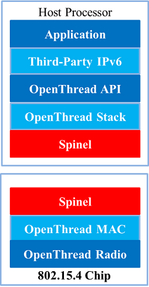

Thread Overview
Thread is a 2.4GHz (IEEE 802.15.4) and IPv6-based wireless mesh network protocol, commonly called a Wireless Personal Area Network (WPAN). Thread is specifically built for low-power, low-latency Internet of Things (IoT) devices. It solves the complexities of the IoT, addressing challenges such as interoperability, range, security, energy, and reliability.
This article provides an overview of the terminology and concepts related to the Thread protocol, network topology, Radio Co-processor (RCP) mode, and sample projects.
Terminology and Concepts
This section introduces the device types within the Thread protocol, the key components that form the network topology, and the open-source Thread network protocol.
Device Types
OpenThread differentiates between various device types based on the roles they can assume within the Thread network.
Full Thread Device (FTD)
A FTD can function as both a router and an end device within the Thread network. Its radio remains continuously active.
Minimal Thread Device (MTD)
A MTD is always an end device and relies on its parent to forward all messages.
There are two important subtypes of MTDs:
Minimal End Device (MED)
This type keeps its radio on at all times, allowing it to receive messages from its parent without any delay. MEDs are suitable for devices that need to be more responsive and can afford the higher power consumption due to having a constant power source or a rechargeable battery.
Sleepy End Device (SED)
This type conserves power by keeping its radio off most of the time and only waking up periodically to communicate with its parent. SEDs are ideal for battery-operated devices that do not need to constantly send or receive data.
Key Components
Leader Router
The leader is the device responsible for managing the network. It assigns router IDs and handles network configuration changes. The leader is elected dynamically, and if the current leader fails, another router takes over, ensuring the continuity of network operation.
Router
Routers are devices that route packets within the Thread network. They help extend the range of the network and enhance reliability. Routers can communicate directly with other routers and the leader.
Routers can also become the leader if the current leader goes down.
REED (Router-Eligible End Device)
These are end devices that have the potential to become routers if the network requires it. They perform routing functions only when promoted to routers by the leader, thereby maintaining an efficient use of resources.
End Device
End devices, also known as sleepy end devices (SEDs), mainly communicate with a single parent router or REED. They do not forward packets for other devices. SEDs are energy-efficient, as they spend most of their time in a low-power state.
FED (Full End Device)
Full end devices are similar to end devices but stay awake to receive packets more frequently. They do not route packets but communicate with their parent router.
SED (Sleepy End Device)
These devices periodically wake up to exchange data with their parent router and spend most of the time in a low-power sleep mode, making them ideal for battery-powered applications.
Commissioner
The commissioner role is responsible for authenticating and commissioning new devices to the network. It handles the secure joining process, ensuring only authorized devices can join the network. The Commissioner can either be integrated within the Thread network (Native) or operate from outside the Thread network (External).
Border Router
A border router connects the Thread network to other networks like Wi-Fi, Ethernet, or the Internet. It provides external connectivity and routes data between the Thread network and external networks.
Openthread
OpenThread is an open-source implementation of Thread networking protocol. It was developed by Google and freely available to developers in order to accelerate the development of products for the connected home and commercial buildings.
GitHub
OpenThread is released under the BSD 3-Clause license and is available on GitHub: https://github.com/openthread/openthread
Network Topology
Thread networks utilize a mesh network topology, which has the following characteristics:
Self-healing Capability
If a node in the network fails, other nodes can dynamically adjust their routes to maintain network connectivity.
Multi-hop Routing
Signals can be transmitted through multiple intermediate nodes, helping to expand the network coverage and improve network reliability.
Dynamic Role Election
Devices within the network can dynamically switch between different roles, such as upgrading from a child node to a router to support more devices when needed.
These topology features of Thread make it highly suitable for IoT applications that require high reliability and flexibility.
The following figure illustrates an example of a Thread network topology.

Thread network topology
RCP Mode
In Co-Processor design, the application runs on host processor and the other controller processor provides the Thread radio. These two processors communicate through a serial connection with standard protocol (Spinel). In an RCP (Radio Co-Processor) design, the core of OpenThread runs on the host processor and the controller processor only implements a minimal MAC layer with the Thread radio. The communication between the RCP and the host processor is managed by OpenThread Daemon through a serial interface over the Spinel protocol. The advantage of RCP design is that OpenThread can use the resources on the more powerful host processor. To ensure the reliability of Thread network, the host processor typically does not sleep. This design is useful for devices that are less sensitive to power constraints.
{kind=link}

RCP Mode
Key Components
Host Processor
Runs the upper layers of the OpenThread stack, including Thread networking, mesh routing, and application logic.
Typically runs a POSIX-compatible operating system, such as Linux.
Radio Co-Processor (RCP)
Handles the lower layers of the OpenThread stack, specifically the 802.15.4 PHY and MAC layers.
Executes time-critical radio operations.
Communicates with the host processor via a serial interface (e.g., UART, SPI).
RCP Solutions
RCP Solutions |
8771HTV |
8771GUV |
8771GTV |
|---|---|---|---|
Interface |
UART |
USB |
UART |
Maximum Tx Power |
8 dBm |
14 dBm |
14 dBm |
Sample Projects
Setting Up RCP Mode with OpenThread
This example application exposes OpenThread configuration and management APIs via a simple command-line interface. The steps below take you through the minimal steps required to ping one Thread device from another Thread device over RCP.
Steps to Ping One Thread Device from Another over RCP
Clone the OpenThread repository
$ git clone https://github.com/openthread/openthread.git
Build OpenThread Daemon.
Install dependencies
$ cd openthread $ ./script/bootstrap
Configure and build the OpenThread Daemon.
$ cd openthread $ ./script/bootstrap $ ./script/cmake-build posix -DOT_DAEMON=ON
Connect the Host and the RCP dongle.
The host and RCP communicate over USB or UART.
The RCP dongle should be recognized as /dev/ttyACMx or /dev/ttyUSBx. (e.g., /dev/ttyACM0)
Ensure the serial connection settings (baud rate) are correctly configured on both sides. (Typically, RCP dongle baud rate setting is 2000000.)
Run the Thread RCP mode.
Start ot-daemon to initiate the RCP device.
$ ./build/posix/src/posix/ot-daemon -v 'spinel+hdlc+uart:///dev/ttyACM0?uart-baudrate=2000000'
Open another terminal window and run ot-ctl command.
$ ./build/posix/src/posix/ot-ctl This starts the command-line interface (CLI) to configure the Thread device.
Configure and Form a Thread Network.
Configure the first device as a leader.
> dataset init new Done > dataset Active Timestamp: 1 Channel: 24 Channel Mask: 0x07fff800 Ext PAN ID: b7d261da17292918 Mesh Local Prefix: fd74:3bcf:ba49:f9ba::/64 Network Key: a0d75caa58cf2fb0b91d5da586adda3a Network Name: OpenThread-2373 PAN ID: 0x2373 PSKc: 483459904e7b84b098c6b2626ec3cf2c Security Policy: 672 onrc 0 Done > dataset commit active Done > ifconfig up Done > thread start Done (wait for a moment) > state Leader Done The device state should eventually display `leader`.Get another Host and RCP dongle.
Configure the second device and have it join the network.
$ ./build/posix/src/posix/ot-daemon -v 'spinel+hdlc+uart:///dev/ttyACM0?uart-baudrate=2000000' $ ./build/posix/src/posix/ot-ctl > dataset networkkey a0d75caa58cf2fb0b91d5da586adda3a Done > dataset panid 0x2373 Done > dataset commit active Done > ifconfig up Done > thread start Done (wait for a moment) > state Router # or Child Done The device state should eventually display `router` or `child`.
Get the IPv6 Addresses.
On the leader device, get the list of IPv6 addresses.
> ipaddr Identify a suitable IPv6 address (e.g., a `fd00::` address).Do the same on the second device to confirm it has joined the network.
Ping Between Devices.
From one device, ping the other using its IPv6 address.
> ping <IPv6-address-of-other-device>
References
[1] Thread Group
[2] OpenThread